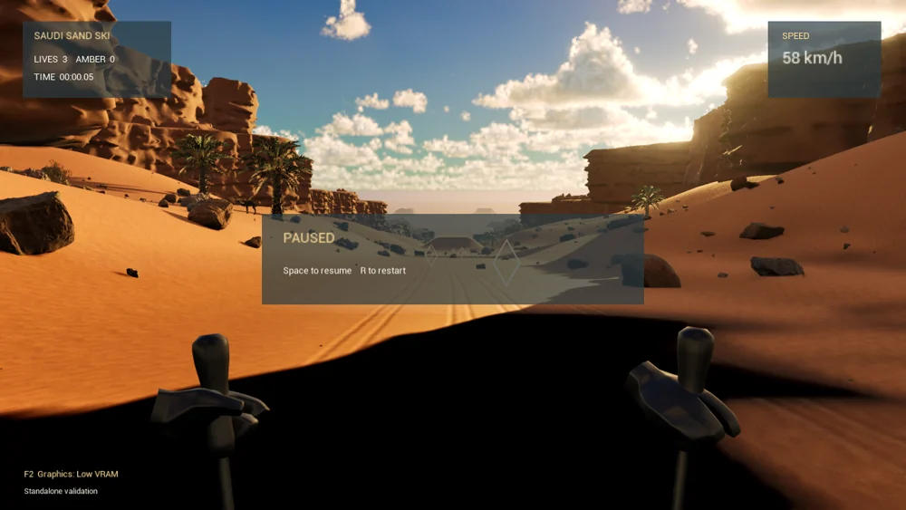

Read the route
The development view presents a desert course from a first-person perspective.
A desert route viewed from inside the action.
Explore the story
Connect a real-time environment with clear run states and player steering.
The prototype source covers input, scoring, pickups and environment construction. The prepared development view presents the desert course from the player's perspective.
The development view presents a desert course from a first-person perspective.
The selected implementation material describes player input, run states, scoring and pickups around the environment.
Explore the complete compositions and interface states. Select any image for a closer look.
Structure, interaction and visual decisions that give the work its character.
RoleConfirm gameplay code, environment work, integration and any adaptation or AI assistance.
AssetsEngine features and imported art are separate from personally authored gameplay. Do not claim an engine built from scratch or sole ownership.
StatusGame prototype evidence; current runtime, distribution rights and release status unverified.